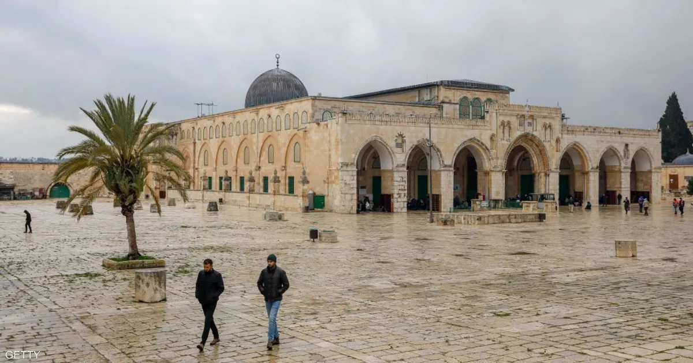
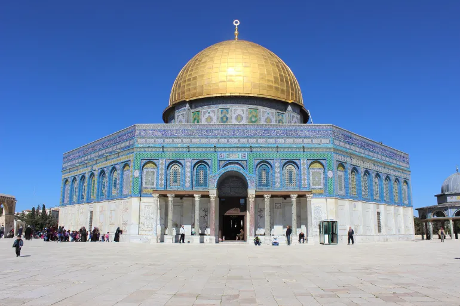
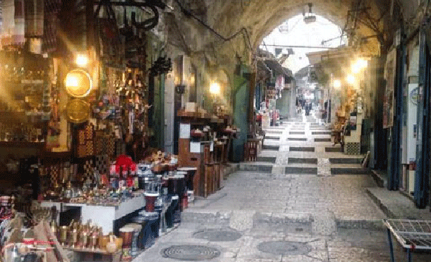
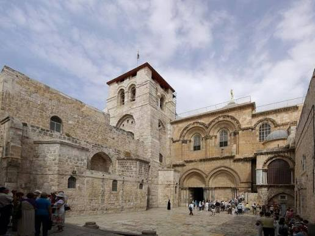

محتويات الصفحة
1. المسجد الاقصى

المسجد الأقصى المبارك هو أحد أكبر المساجد في العالم ومن أكثرها قدسية لدى المسلمين، وهو أولى القبلتين وثالث الحرمين الشريفين. يقع في قلب البلدة القديمة في مدينة القدس في فلسطين، ويرتبط ارتباطاً وثيقاً بالعقيدة الإسلامية كونه مسرى النبي محمد ﷺ وموقع رحلة الإسراء والمعراج
2.قبة الصخرة

مسجد قبة الصخرة المشرفة هو أحد أهم وأبرز المعالم المعمارية الإسلامية في العالم، ويقع في قلب ساحات المسجد الأقصى المبارك في البلدة القديمة بالقدس. يتميز بقبته الذهبية الشهيرة وشكله المثمن، ويمثل تحفة فنية وهندسية تعود إلى العصر الأموي.
البلدة القديمة

من أبرز معالم مدينة القدس أسواقها، التي تمثل جزءاً أصيلاً من هويتها، وتمتاز ببهاء قبابها وبديع مناظرها. وتعد العمود الفقري لاقتصاد المدينة؛ إذ تضم بين جنباتها العديد من المحلات التجارية. وقد اكتسبت هذه الأسواق أسماءها إما من البضائع التي تباع فيها، أو من نسبتها إلى أشخاص، أو أماكن، أو معالم معينة. وترتبط هذه الأسواق بشبكة كبيرة من الطرق والعقبات والأحواش. لم تسلم أسواق مدينة القدس من الهجمات التهويدية الشرسة التي تطال كل جزء من مكوناتها؛ رغم أن لكل سوق منها مكانتها وحكايتها التاريخية؛ فقد حاول الاحتلال إلباسها ثوبًا لم يكن يومًا لها، من خلال تهويد بعض أسمائها، وتدمير البعض منها؛ وإغلاق ومصادرة العديد من محلاتها التجارية؛ إضافة إلى فرض الضرائب الثقيلة على كاهل أصحابها، لتضييق الخناق عليهم ومن الامثلة على هذه الاسواق
- سوق اللحامين
- سوق العطارين
- سوق الدباغة
كنيسة القيامة

كنيسة القيامة أو كنيسة القبر المقدس أو بازيليك القبر المقدس هي كنيسة بحارة النصارى في أسوار البلدة القديمة في القدس. بنيت الكنيسة فوق جلجثة أو الجلجثة، وهي مكان الصخرة التي يعتقد أن يسوع صلب عليها. تعتبر من أقدس الكنائس المسيحية، وأكثرها أهمية في العالم المسيحي، وتحتوي الكنيسة وفق المعتقدات المسيحية على المكان الذي دفن فيه يسوع واسمه القبر المقدس. استخدام موقعها سابقا مقبرة يهودية ومعبد وثني. بنيت الكنيسة في القرن الرابع في حكم قسطنطين العظيم وبقيت حتى دمرها الحاكم بأمر الله في 1009، أعيد بناؤها لاحقا مع إضافات من الإمبراطور قسطنطين التاسع والصليبيين وأصبح المبنى الحالي أكبر عن المبنى الأصلي. مدخل وساحة كنيسة القيامة في حارة النصارى في البلدة القديمة في القدس ينطبق الوضع الراهن للأماكن المقدسة العائد إلى عام 1757 على هذه الكنيسة. تتقاسم طوائف الكنيسة الأرثوذكسية الشرقية والكاثوليكية والأرثوذكسية المشرقية السيطرة على الكنيسة. لمعرفة المزيد عن كنيسة القيامة في القدس